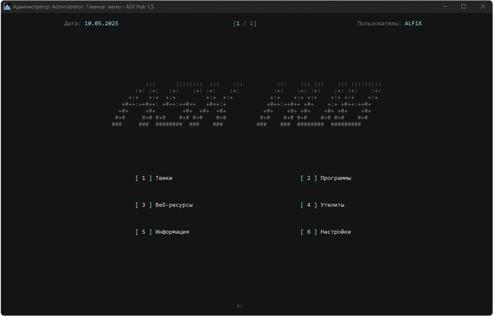

ASX Hub
Ваш центр оптимизации и настройки Windows
Ускорьте работу системы, настройте её под себя и получите максимум производительности с ASX Hub.
Скачать ASX HubЗагрузка актуальной версии...
Интерфейс ASX Hub

Ключевые возможности

Ускорение системы
Оптимизируйте загрузку, службы и фоновые процессы для максимальной производительности.

Контроль приватности
Отключите телеметрию и настройте параметры конфиденциальности Windows.

Гибкая настройка
Изменяйте скрытые параметры системы и персонализируйте Windows под свои нужды.

Очистка системы
Удаляйте ненужные файлы, очищайте кэш и освобождайте место на диске.

Кастомизация интерфейса
Настройте внешний вид Windows, изменяйте темы, иконки и другие элементы интерфейса.

Автоустановка софта
Автоматизируйте установку необходимого программного обеспечения после переустановки системы.
Системные требования
- Операционная система: Windows 10 / 11 (рекомендуется x64)
- Права администратора: Обязательны для корректной работы
- Интернет-соединение: Требуется для обновлений и загрузки компонентов
- Свободное место на диске: Минимум 15 МБ
Убедитесь, что ваша система соответствует указанным требованиям для оптимальной работы ASX Hub.